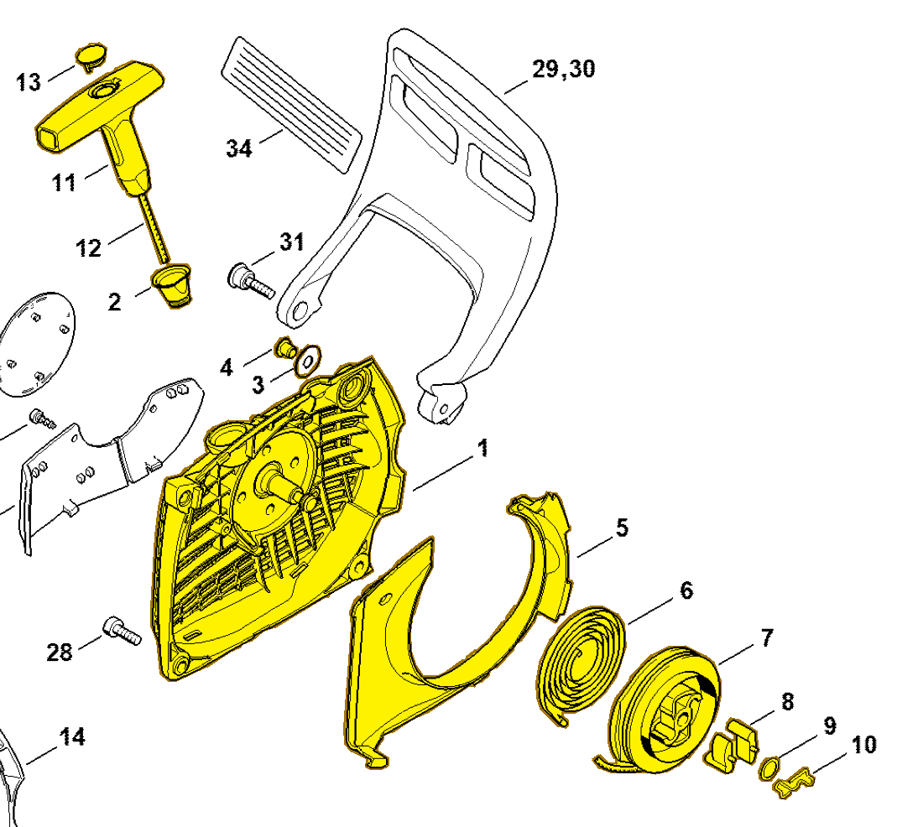

Fan housing with rewind starter
1141 080 2104
MS 261 — rewind starter
Complete fan housing with rewind starter; includes items 1–13, including spring 1128 195 3500 (item 10).
Item 1–13 Qty listed: 1

MS 261 C-M spare-parts list, 10/02/2023. Drawing p. 19; parts table p. 20.
Suggest a correctionGitHub · sign-in required